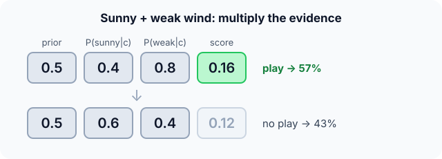

Prerequisites
- Probability: $P(A)$, $P(A \mid B)$.
- Bayes' rule: $P(c \mid x) \propto P(x \mid c)\,P(c)$.
- Classification.
The analogy
Everyday analogy
A doctor diagnosing flu looks at each symptom separately: "fever is common with flu, a cough is common with flu", and combines them, as if each symptom were independent evidence.
Naive Bayes does the same. It multiplies how typical each feature is for each class, ignoring how the features relate to each other. That's the "naive" part.
How it works
The table: play days (5): sunny 2, rainy 3; weak wind 4, strong 1. No-play days (5): sunny 3, rainy 2; weak wind 2, strong 3.
Start with today's prediction by hand
Today: sunny, weak wind. Priors $P(\text{play}) = P(\text{no}) = 5/10$. Predict, then open "Check".
Example: predict before you read
Step 1. Read the likelihoods for play days.
Check
$P(\text{sunny} \mid \text{play}) = 2/5 = 0.4$; $P(\text{weak} \mid \text{play}) = 4/5 = 0.8$.
Step 2. Cover the next line and guess: the score for "play" and the score for "no".
Check
Play: $0.5 \cdot 0.4 \cdot 0.8 = 0.16$. No: $0.5 \cdot 0.6 \cdot 0.4 = 0.12$.
Step 3. Normalise the two scores. Predict the probability of play and the decision.
Check
$0.16 / (0.16 + 0.12) \approx 0.57$. Predict "play".

Quick recall: Before reading further, cover the text above and say out loud: what is "naive" about Naive Bayes?
Check your answer
It assumes the features are independent given the class, so their likelihoods can simply be multiplied.
Finish the picture: a value never seen
Suppose "overcast" never appeared on a no-play day in the data. Today is overcast.
- Without smoothing. Predict $P(\text{overcast} \mid \text{no})$ and its effect.
Check
0/5 = 0, so the "no" score is 0 whatever the wind: the model is certain, from a single missing count.
- Laplace (add-one) smoothing. Predict the new estimate, with 3 possible outlook values.
Check
$(0 + 1)/(5 + 3) = 0.125$: small but not zero, so the other evidence still counts.
Quick recall: Without scrolling up, say out loud: why does one zero count wipe out a whole class?
Check your answer
The class score is a product, so a single factor of 0 makes the whole product 0, no matter how strong the other evidence is.
Full worked calculation
From the raw counts to the final probability, then the same calculation with Laplace smoothing and with logarithms, which is how real implementations do it. Query: a sunny day with weak wind.
| Class | Days | Prior | Sunny | $P(\text{sunny}\mid c)$ | Weak wind | $P(\text{weak}\mid c)$ |
|---|---|---|---|---|---|---|
| Play | 5 | 5/10 = 0.5 | 2 | 2/5 = 0.4 | 4 | 4/5 = 0.8 |
| No play | 5 | 5/10 = 0.5 | 3 | 3/5 = 0.6 | 2 | 2/5 = 0.4 |
-
1Priors from the class counts
$$P(\text{play}) = \frac{5}{10} = 0.5, \qquad P(\text{no}) = \frac{5}{10} = 0.5$$Before looking at today's weather, both outcomes are equally common in the records. With unbalanced data, the prior would favour the more frequent class.
-
2Likelihoods from the counts
$$P(\text{sunny} \mid \text{play}) = \frac{2}{5}, \quad P(\text{weak} \mid \text{play}) = \frac{4}{5}, \quad P(\text{sunny} \mid \text{no}) = \frac{3}{5}, \quad P(\text{weak} \mid \text{no}) = \frac{2}{5}$$Each likelihood answers "among days of this class, how often did this feature value appear?". Training Naive Bayes is nothing more than building this table.
-
3Multiply (the naive step)
$$\text{score(play)} = 0.5 \cdot 0.4 \cdot 0.8 = 0.16, \qquad \text{score(no)} = 0.5 \cdot 0.6 \cdot 0.4 = 0.12$$Assuming outlook and wind are independent within each class, the joint likelihood is just the product. Sunny pushes towards "no" (0.6 vs 0.4), weak wind pushes harder towards "play" (0.8 vs 0.4).
-
4Normalise into probabilities
$$P(\text{play} \mid \text{sunny, weak}) = \frac{0.16}{0.16 + 0.12} = \frac{0.16}{0.28} \approx 0.571$$The two scores are proportional to the posterior probabilities; dividing by their sum makes them add up to 1. The model predicts "play" with 57% confidence.
-
5Laplace smoothing (add one)
$$P(\text{sunny} \mid \text{play}) = \frac{2 + 1}{5 + 2} = \frac{3}{7}, \quad P(\text{weak} \mid \text{play}) = \frac{4 + 1}{5 + 2} = \frac{5}{7} \;\Rightarrow\; \text{play } 0.153,\; \text{no } 0.122,\; P \approx 0.556$$Adding 1 to every count (and 2, the number of possible values, to the total) guarantees no probability is 0. The answer barely changes here, but it would save us if some count had been 0.
-
6The same with logarithms
$$\ln 0.16 \approx -1.833, \qquad \ln 0.12 \approx -2.120 \quad\Rightarrow\quad \text{play wins}$$With hundreds of features (words in an email), the products become tiny and underflow to 0. Adding logs instead of multiplying probabilities gives the same winner, because the log preserves order.
What the numbers tell us
Naive Bayes is three operations: count, multiply, normalise. Today: 57% play (55.6% with smoothing).
Each feature contributes one factor, so you can see exactly which evidence pushed the decision and by how much: weak wind doubled the odds for "play".
The rule in plain words
Training: estimate the prior $P(c)$ of each class and, for each feature, $P(x_j \mid c)$ by counting (with smoothing).
Prediction: for each class, multiply the prior by the likelihood of every observed feature value; pick the class with the largest product (normalise to get probabilities).
Quick recall: Before you read the code, describe how to turn priors and likelihoods into a probability, in your own words. Then check below.
Check your answer
Multiply the prior of each class by the likelihood of every observed feature, then divide each product by the sum of the products.
The code
Read this code after you have computed the two scores by hand. It will make more sense.
double nb_posterior_yes(double prior_yes, double l_yes[], double l_no[], int m) {
double yes = prior_yes, no = 1 - prior_yes;
for (int j = 0; j < m; j++) { yes *= l_yes[j]; no *= l_no[j]; } /* naive: multiply */
return yes / (yes + no); /* normalise */
}
double laplace(int count, int class_total, int n_values) { /* add-one smoothing */
return (count + 1.0) / (class_total + n_values);
}Definition
What you just did, in one line: Naive Bayes classifies by Bayes' rule, assuming features are independent given the class: $P(c \mid x) \propto P(c) \prod_j P(x_j \mid c)$.
flowchart LR
D["training data"] -->|count| P["priors P(c)"]
D -->|count| L["likelihoods P(feature | c)"]
P --> S["score(c) = P(c) × product of likelihoods"]
L --> S
S --> N["normalise → probabilities"]
N --> A["predict the largest"]
How costly is it?
Quick recall: Before looking at the formula, predict: what does training Naive Bayes consist of?
Check your answer
Counting: class frequencies and how often each feature value appears in each class. One pass over the data.
Bayes' rule with the independence assumption:
$$P(c \mid x_1, \dots, x_m) \;=\; \frac{P(c) \prod_{j=1}^{m} P(x_j \mid c)}{\sum_{c'} P(c') \prod_{j} P(x_j \mid c')}$$In practice the logs of the probabilities are added instead of multiplying many small numbers, which would underflow to 0.
| Phase | Cost | Why |
|---|---|---|
| Training | $O(nm)$ | One counting pass over $n$ examples, $m$ features |
| Prediction | $O(mC)$ | One product per class, $C$ classes |
| Memory | $O(m \cdot V \cdot C)$ | A count per feature value per class |
Best for: text classification (spam, sentiment, topics) and quick baselines with many categorical features.
- Pro: Very fast training (counting) and prediction.
- Pro: Works well with little data and very many features.
- Con: The independence assumption is usually false, so probabilities are often over-confident.
- Con: Zero counts need smoothing, and correlated features are double-counted.
Warning
Multiplying hundreds of small probabilities underflows to 0 in floating point. Real implementations add log-probabilities instead; the class with the largest sum wins.
Exam tip
Lay out a table: class, prior, one likelihood per feature, product. Then normalise. Mention Laplace smoothing whenever a count is 0.
Common mistakes
- Forgetting the prior $P(c)$ in the product.
- Leaving zero counts unsmoothed, so one unseen value decides everything.
- Reading the output probabilities as well calibrated; they are often too extreme.
Try it yourself
Exercise 1 (warm-up)
Using the tennis table, predict for a rainy day with strong wind.
Hint
Play: rainy 3/5, strong 1/5. No: rainy 2/5, strong 3/5.
Answer
Play: $0.5 \cdot 0.6 \cdot 0.2 = 0.06$. No: $0.5 \cdot 0.4 \cdot 0.6 = 0.12$. Predict no play (67%).
Exercise 2 (a bit harder)
Spam filter: $P(\text{spam}) = 0.4$. The word "free" appears in 50% of spam and 5% of normal mail; "meeting" in 2% of spam and 20% of normal mail. An email contains both words. Compute $P(\text{spam} \mid \text{email})$. Write your answer down before you open it.
Show answer
Spam: $0.4 \cdot 0.5 \cdot 0.02 = 0.004$. Normal: $0.6 \cdot 0.05 \cdot 0.2 = 0.006$. $P(\text{spam}) = 0.004 / 0.010 = 0.4$: not enough to call it spam.
Did you know?
Did you know?
Paul Graham's 2002 essay "A Plan for Spam" popularised Bayesian spam filtering, and within a few years almost every email client used it.
Despite its wrong independence assumption, Naive Bayes often classifies well: the ranking of classes can be right even when the probabilities themselves are off.
Key points to remember
If you remember one thing from each line, remember the because.
- Training is just counting because every probability is a frequency in the training data.
- Likelihoods are multiplied because features are assumed independent given the class.
- Smoothing is needed because one zero count makes a class's whole product zero.
- Logs are used in practice because products of many small probabilities underflow.
- It scales to huge vocabularies because each feature adds just one factor per class.
Self-check questions
Answer these in order, out loud. They follow the page, so your answers become the script of your video.
- How is Naive Bayes like a doctor weighing symptoms one at a time?
Sample answer
Each symptom is judged on its own as evidence for a disease and the evidence is combined, as if symptoms were independent.
- Predict play for a sunny day with weak wind.
Sample answer
Play: $0.5 \cdot 0.4 \cdot 0.8 = 0.16$; no: $0.5 \cdot 0.6 \cdot 0.4 = 0.12$; so play, with probability about 0.57.
- Why does
laplaceadd 1 to the count and the number of values to the total?A good answer checks that the probabilities still sum to 1.
Sample answer
Adding 1 to every value's count removes zeros; adding the number of values to the denominator keeps the probabilities summing to 1.
- So what is Naive Bayes, in one sentence?
Sample answer
A classifier that applies Bayes' rule assuming features are independent given the class, multiplying the prior by each feature's likelihood.
- Why is the independence assumption called naive, and why does the method still work?
A good answer separates probabilities from rankings.
Sample answer
Features are rarely independent (cloudy and humid go together), so probabilities are distorted; but the class with the highest score is often still the right one.
- What do training and prediction cost?
Sample answer
Training is one counting pass, $O(nm)$; prediction is $O(mC)$ for $m$ features and $C$ classes.
- Give two pros and two cons of Naive Bayes.
Sample answer
Pros: very fast, works with little data and many features. Cons: over-confident probabilities, and it needs smoothing and ignores feature correlations.
- If you had to teach this to a friend in 2 minutes, what would you leave out, and why?
Sample answer
I'd leave out log-probabilities and the full Bayes formula. I'd keep the doctor analogy, the sunny/weak-wind calculation, and "multiply prior and likelihoods, smooth zeros".
External resources
- scikit-learn: Naive Bayes: Gaussian, multinomial and Bernoulli variants.
- Wikipedia: Naive Bayes classifier: derivation and spam example.
- Paul Graham: A Plan for Spam: the essay that made Bayesian spam filters popular.
Videos
- YouTube search: StatQuest Naive Bayes: StatQuest's clear explanation.